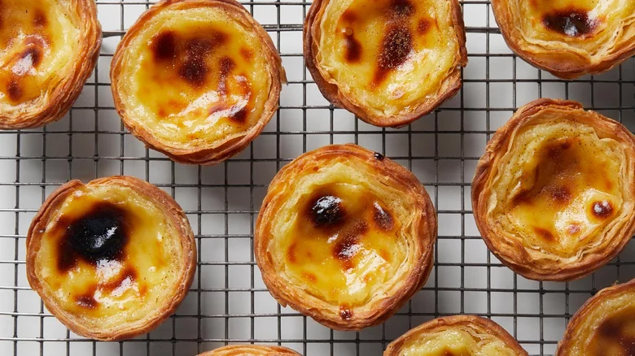

Portuguese Egg Tart Recipe
Home

Description
If you've ever been to Portugal, you know that one of the greatest pastries to binge-eat there is the Portuguese egg tart: its crisp, flaky crust holding a creamy custard center, blistered on top from the high heat of an oven.
Ingredients
Puff Pastry
- 1½ sticks unsalted butter, softened
- 1¾ cups all-purpose flour, plus more for dusting
- ⅔ cup water
- ¼ teaspoon kosher salt
Filling and Garnish
- 1 cup granulated sugar
- ⅔ cup water
- 1 cinnamon stick
- 1 cup, plus 6 tablespoons, whole milk, divided
- ½ cup all-purpose flour
- 6 egg yolks
- Ground cinnamon, for garnish
Steps
- Make the puff pastry: In a small bowl, whisk the butter until it is the consistency of sour cream. In the bowl of a stand mixer fitted with the dough hook, combine the flour, water and salt. Mix on low speed, scraping the bowl down occasionally, until the mixture comes together and has a tacky consistency.
- Transfer to a well-floured work surface and form into a 1-inch rectangle. Using a floured rolling pin, roll the dough into a ½-inch-thick rectangle, 10 inches long. Cover with plastic wrap and let it rest for 15 minutes.
- Remove the plastic wrap and roll the dough into a 15-inch square, dusting with more flour as needed. Spread a third of the butter on the bottom half of the dough, leaving a 1-inch rim. Using a bench scraper, fold the top half of the dough over the butter. Press the edges to seal and pat the dough with the rolling pin. Roll the dough into another 15-inch square. Spread half of the remaining butter on the bottom half of the dough, leaving a 1-inch rim. Using the bench scraper, fold the top half of the dough over the butter. Press the edges to seal.
- Spread the remaining butter all over the dough, leaving a 1-inch rim. Starting with the edge closest to you, roll the dough into a tight log. Wrap in plastic wrap and refrigerate until very firm, at least 2 hours, preferably overnight.
- Make the filling: Preheat the oven to 500°. In a medium saucepan, combine the sugar, water and cinnamon stick over high heat. Bring to a boil and cook for 1 minute, then remove from the heat and let sit until ready to use.
- On a lightly floured surface, cut the log into thirty ½-inch slices. Place each slice into the cavity of an egg tart mold. Use your thumb to press the center of the spiral into the bottom of the pan and continue pressing to evenly flatten the dough against the bottom and sides of the cavity. Repeat with the remaining dough. Refrigerate until firm, 10 minutes.
- Meanwhile, in a small saucepan, heat 1 cup, plus 1 tablespoon, of the milk over medium heat until bubbles begin to form around the edges, 4 to 5 minutes. In a large bowl, whisk the flour with the remaining 5 tablespoons of milk. Continue whisking while adding the hot milk in a slow, steady stream. Discard the cinnamon stick from the sugar syrup and whisk the syrup into the milk mixture in a steady stream. Return to the saucepan and cook over low heat, whisking constantly, until thickened 10 to 12 minutes.
- Add the yolks to the mixture and whisk until well combined, then strain through a fine-mesh sieve. Pour 1½ tablespoons of the warm filling into each pastry shells.
- Bake until the shells are golden brown and crisp, the custards are set, and the tops are blackened in spots, 15 to 20 minutes. Let cool in the pans on wire racks for 5 minutes. Then, remove the molds, transfer the tarts to the wire racks and sprinkle with cinnamon. Serve warm.